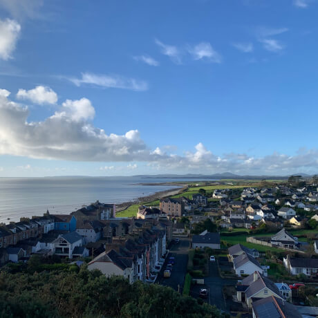
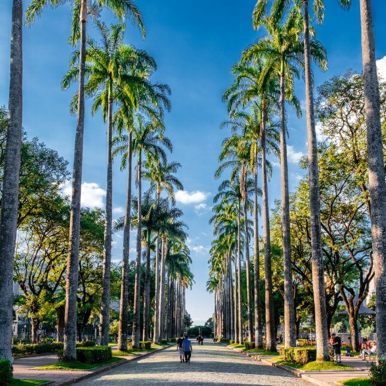

Conheça um pouco mais sobre a localização dos seus amigos
Cada pessoa é um artista livre, chamado a transformar as condições, pensamentos e estruturas que moldam nossas vidas.
A cidade de TripleTen reuniu profissionais de diversos cantos do mundo. Hoje, a Galeria de Arte TripleTen tem o orgulho de apresentar histórias e fotos de algumas das pessoas que dedicam seu tempo e esforço para fazer com que os futuros profissionais de tecnologia desta cidade se sintam em casa. Cada um de nós tem uma história única sobre o lugar de onde viemos. Sinta-se à vontade para adicionar sua própria história e uma obra de arte visual dedicada à sua cidade natal à nossa coleção. Não importa de onde você é, estamos felizes por você ser nosso vizinho.

Criccieth, País de Gales
Artistas Steffan Warren, editor-chefeKseniya Glagoleva, gerente de projeto
A ruína medieval do Castelo de Cricieth tem vista para a cidade abaixo de uma rocha que se projeta para o mar. Acredita-se que tenha sido construído por Llewelyn, o Grande, no século XIII. Cerca de 900 anos depois, a auto-intitulada *Pérola de Gales nas margens de Snowdonia* tornou-se um destino turístico popular durante os meses de verão. A uma curta caminhada da estrada do castelo, você pode desfrutar do melhor sorvete do mundo no Cadwalader's, cujo ingrediente secreto, segundo rumores, são algas marinhas de origem local. Outra reivindicação à fama é o fato de que Criccieth ganhou o prêmio *Wales in Bloom* por cinco anos consecutivos por suas espetaculares exibições florais pela cidade. Foi também a casa de David Lloyd George, o único galês a ocupar o cargo de primeiro-ministro do Reino Unido.
Compre esta obra de arte como NFTBerea, EUA
Artista Travis Turner, autor e editor

Berea é uma pequena cidade localizada na parte central do Kentucky. A cidade é cercada por belas florestas e campos. É conhecida como a capital do artesanato do estado, e os visitantes encontrarão muitas oportunidades de compras: lojas com bijuterias artesanais, velas, artigos de madeira, galerias, ateliês de vidro e muito mais. A cidade realiza um festival anual que celebra o "pão de colher", um prato local feito com pão de milho e servido com uma colher de pau. No entanto, provavelmente é mais conhecido pela faculdade local. O Berea College foi fundado em 1855 e foi o primeiro colégio no sul a ser racialmente integrado, bem como o primeiro a ser misto. De forma um tanto singular, não cobra mensalidades - todo aluno recebe uma bolsa de estudos integral.
Compre esta obra de arte como NFTMuramvya, Burundi
Artista Grevisse Kenguruka, editor técnico

Muramvya é uma das 18 províncias de Burundi. Na era do reino, Muramvya era a capital real e em 2007, por causa de sua paisagem cultural e natural, foi adicionada à Lista Provisória do Patrimônio Mundial da UNESCO. Está localizada no centro de Burundi, entre as capitais políticas e econômicas do país. O clima é bastante frio à noite, mas durante o dia, você pensaria que está no céu. A 2.665 metros (8.743 pés) acima do nível do mar, o Monte Teza é um dos lugares mais frios da província. Mas essa brisa fresca permite uma das maiores plantações de chá e café do país, que representam a maior parte das exportações do Burundi. O Parque Nacional de Kibira, uma das maiores reservas de vida selvagem para macacos, se sobrepõe a quatro províncias, incluindo Muramvya. Este Parque Nacional encontra-se no ápice das belas montanhas do Congo-Nile Divide, variando entre 1.550 e 2.660 metros de altitude. Está repleta de uma bela vegetação e fonte para os vários rios e riachos que fornecem água em todo o país.
Compre esta obra de arte como NFTBelo Horizonte, Brasil
Artista João Luiz Cambraia, desenvolvedor web
Belo Horizonte é a capital do estado de Minas Gerais, Brasil, e uma das cidades mais importantes do país. Fundada em 1897, foi planejada para ser a primeira cidade moderna do Brasil. Rodeada pelas montanhas da Serra do Curral, a cidade encanta por sua combinação de natureza e urbanização. O clima é ameno na maior parte do ano, com dias ensolarados e noites frescas. Um dos principais marcos da cidade é a Praça da Liberdade, um dos espaços públicos mais tradicionais de Belo Horizonte. Cercada por edifícios históricos de arquitetura eclética e art déco, a praça é o coração cultural da cidade, abrigando o Circuito Liberdade, um conjunto de museus, galerias e centros culturais. Belo Horizonte é conhecida por sua vasta cena cultural, com museus e teatros de renome. O Conjunto Arquitetônico da Pampulha, projetado por Oscar Niemeyer, é um Patrimônio Mundial da UNESCO e um dos pontos turísticos mais icônicos da cidade. Além disso, BH é famosa por seus bares, oferecendo uma experiência única da culinária mineira.
Compre esta obra de arte como NFT